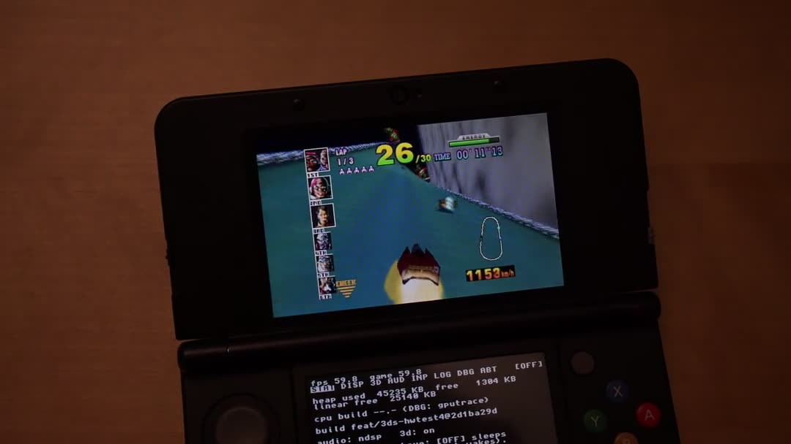
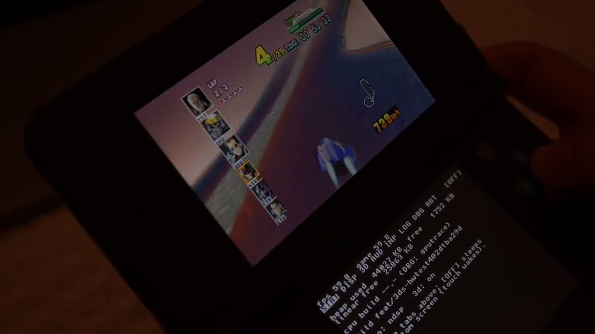
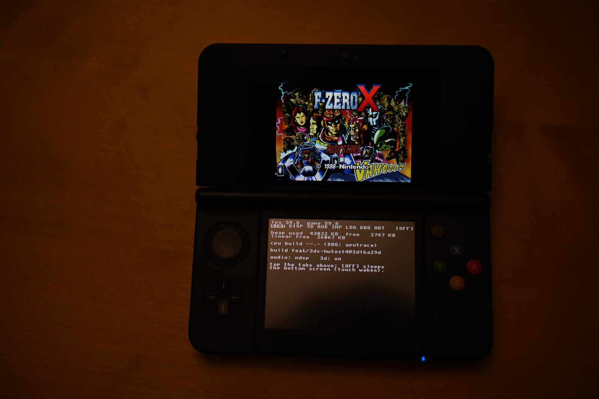
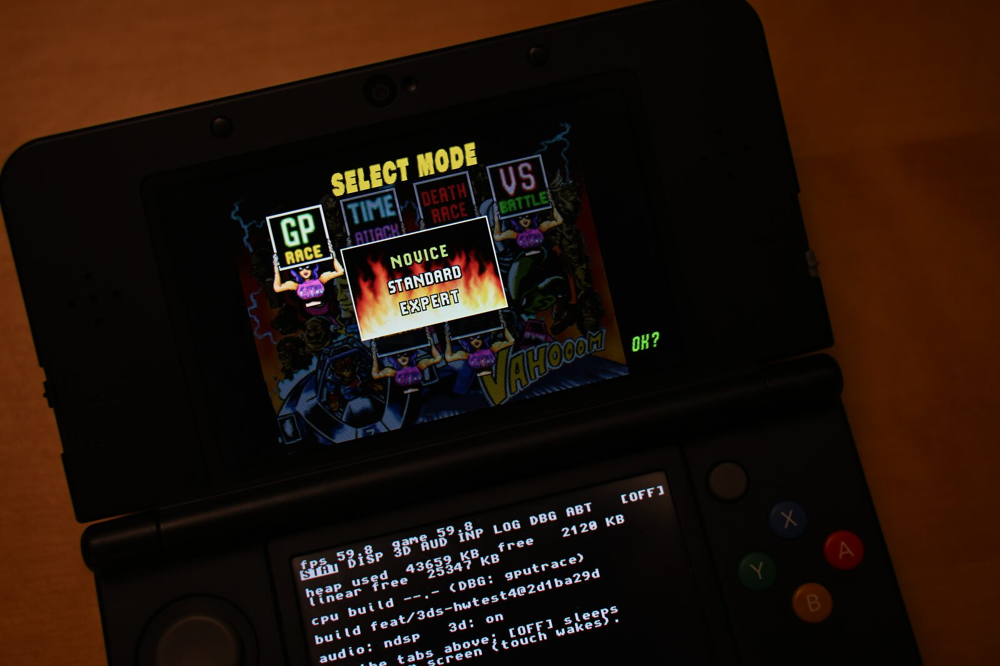
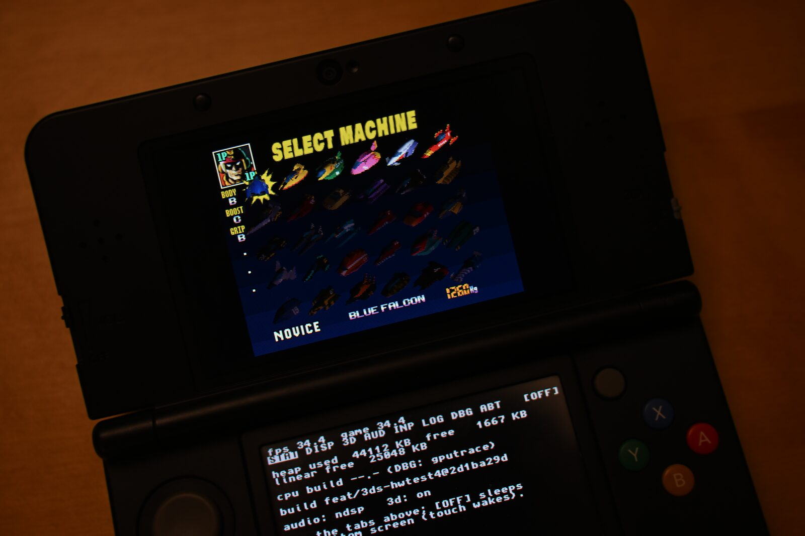
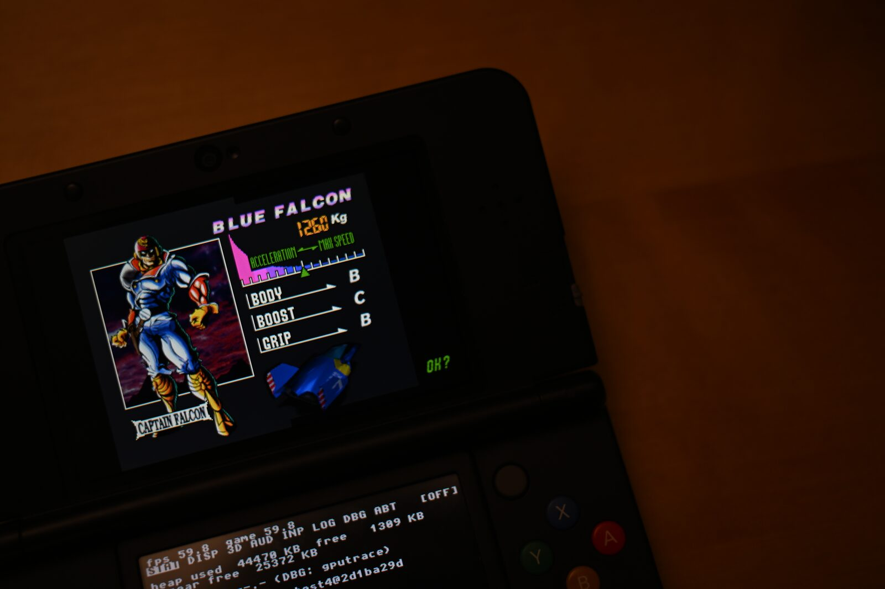

Post-mortem · 2026-08-11 → 2026-09-03
G-Diffuser on New 3DS
F-Zero X, ported from the libultraship PC runtime to the New Nintendo 3DS at a native 60 fps with stereoscopic 3D, by one person directing a fleet of Claude agents over 24 days.
- Overview — What was built, in one screen
- Author's notes — The one page written by a human
- Every step — The 24-day chronology
- Road to 60 — The performance campaign, round by round
- Difficulties — What fought back, and how it was beaten
- Frontier — Why this is innovative, bold, and new
- Agentic workflow — How the fleet was run, and how the ship was steered
- Cost — Tokens, dollars, subagents
01 · Overview
F-Zero X on a New 3DS, at 60, in 3D, in 24 days
A post-mortem of porting G-Diffuser, the F-Zero X decompilation on the libultraship runtime, to the New Nintendo 3DS. One person directed; one long-lived Claude session orchestrated; 147 subagents built. The console went from a black screen to a native-60 stereoscopic racer between 2026-08-11 and 2026-09-03.
On hardware

open clip
open clip



What was built
A New 3DS build of G-Diffuser that boots from the HOME menu (.cia) or the homebrew launcher (.3dsx), reads prebaked asset archives from the SD card (no ROM ever touches the console), and plays the whole game: Grand Prix, Time Trial, Practice, Death Race, the machine editor screens, with music and effects on the real DSP, stereoscopic 3D on the slider, a touch menu on the bottom screen with live performance levers and a log viewer, and clean HOME suspend, resume, close, lid sleep and power-off. Frame pacing is native 60 Hz, not 30 Hz with interpolation.
The stack
- decomp: the F-Zero X decompilation (inspectredc/fzerox), untouched, plus 10 patches.
- libultraship: the N64 runtime (Kenix3), untouched, plus 38 patches, including a 13-line newlib fix that lets it build on devkitARM.
- port/3ds: 15,039 lines of new code: a citro3d rendering backend, stereo, audio, input, menu, lifecycle, render thread, profilers, packaging.
The headline numbers on hardware
| When | Median | p10 | At cap |
|---|---|---|---|
| 08-14 first race (emulator) | 12–20 | – | – |
| 08-21 first hardware run | 48–50 | – | – |
| 08-28 release-grade build | ~51 | ~40 (crowds, MINIMAL) | – |
| 09-02 Round 1: Mainline before the campaign | 51.3 | 39.2 | 9% |
| 09-02 Round 2: Bridge memos (brfast) | 57.2 | 46.6 | 29% |
| 09-02 Round 3: HUD atlas · triangle memo · TMEM · audio | 56.0 | 48.0 | 32% |
| 09-02 Round 4: Render thread on core 2 (pipe) | 57.6 | 44.6 | 14% |
| 09-03 Round 5: Ahead mode · bridge on main · auto rival detail | 59.6 | 51.4 | 53% |
The arc in five lines
- 08-11 → 08-14: from research to a race. Feasibility dossier, plan for a team of agents, five parallel foundation streams, six boot bugs, first race at 12–20 fps in the emulator.
- 08-20 → 08-22: from pink to playable, then to a real console. Fog, HUD, livery, shadow, sky fixed; the loadblock discovery took menus from 27 to 60 fps; first hardware run 08-21 ("wow it runs amazing"); audio the same evening.
- 08-27 → 08-28: product grade. Five-agent fleet drop, stereo armed, touch menu, rival detail, GPU vertex-transform moonshot built and shelved, README with legal notice, release package.
- 09-01 → 09-02: lifecycle and the last big lever. HOME crash and close-from-HOME hang fixed; bridge output cache proven a NO-GO and pivoted into brfast; LOCKED-60 campaign launched with four parallel levers.
- 09-02 → 09-03: multi-core. Render thread on core 2, one-frame-ahead mode, bridge on main, auto LOD; median 59.6 with 53% of frames at cap; crash fixed; viewport placement fixed; stereo markers anchored.
Read on
- Author's notes: The one page written by a human.
- Every step: The 24-day chronology.
- Road to 60: The performance campaign, round by round.
- Difficulties: What fought back, and how it was beaten.
- Frontier: Why this is innovative, bold, and new.
- Agentic workflow: How the fleet was run, and how the ship was steered.
- Cost: Tokens, dollars, subagents.
docs/research/, the hardware logs, or the session transcripts on this machine. Where a value is an estimate (the dollar figures, which apply published API list prices to exact token counts), the assumption is stated next to it.02 · Author's notes
A note from the human
Everything else on this site was written by the agent that did the work. This page was not.
03 · Every step
Twenty-four days, step by step
The project ran in five bursts separated by three credit pauses. Dates are from git and the session transcripts (local time); quotes are the user's own words at that moment.
Burst 1 · Research to first race (08-11 → 08-14)
First message of the project invoked the deep-research workflow on libultraship and 3DS targeting. Verdict: New 3DS only; the Old 3DS 64 MB region cannot hold it. "new 3ds as target makes total sense".
"lets create a plan for team of agents to work. can we segment plan so we can have multiple work trees and multiple contributing agents ?" A dossier, a memory budget, a five-stream plan (A gfx, B os, C audio, D assets, E 32-bit sweep, F census) and a reviewer agent for the plan.
Contract headers, stream directories, a stub build. The libultraship carve spike proved the runtime compiles on devkitARM with a 13-line newlib patch. Phase 1 streams ran in parallel worktrees and merged in order E→B→A→D→C on 08-12 21:45.
M1 integration: the full game compiled and linked on 08-13 01:33. Then the black screens: bzero, 64DD, sdmc: path mangling, double swap, the SETTIMG low-address guard, the DMA misroute. User at 05:37, 05:42, 12:44, 13:00, 13:16: "still black screen".
"oh! i saw some random shapes briefly for the menu or something. just a white screen with a rainbow rectangle at the bottom".
Race freeze (DMA misroute) at 19:26, then a race-time death exposed as an uncaught bad_alloc (EnqueueList's worst-case reserve), fixed by capping the resource cache. "crashed again when race tried to load", "says fatal error encountered".
"omg it works ! i can race ! it looks messed up and runs at 12 to 20fps but it works!" Nine minutes later: "i didnt see any hard crashes right now, so lets see about the visual fixes. any work that can be done in parallel ?"
"lets do 1, 2, and 3. for CI though, no github actions. this will all be local for now." SMDH metadata, makerom CIA packaging, the real-hardware runbook, a local ci-3ds.sh, the user guide. Two deep-research runs: 60 fps on New 3DS, and stereoscopic 3D. The stereo foundation and GPU profiling telemetry landed the same night.
"we ran out of fable credits until next week, lets capture all the inflight tasks and store state so we can pick up the work later." RESUME.md written; the fog blocker (pink road) open; three agents in flight.
A deep-research pass on Fast3D vs RT64 confirmed the renderer choice; an asset-cost shift (ETC1, decimation) was added to the plan and marked "done with opus, reconsider with fable".
Burst 2 · Playable, then hardware (08-20 → 08-22)
"can you resume from where we last left off ? we should have tokens". Fog solved at 01:57 local (per-vertex blend, not the depth LUT): the road appeared. Consolidation merge of fog + gpuprof + stereo + perf + cull.
Fleet on HUD garbage, shadow, boost, sky wedge, tunnel roof, km/h, building pop-in, CI. The measurement pass returned the CPU-bound verdict. Night session 1 while the user slept.
"sure, promote it. i dont see any large regressions. probably better".
Root cause found after eight wrong fixes: the bridge's ILP32 high-bits backstop dropping 13 SETTIMG per frame. "omg finally!!"
User demanded new methods for the remaining visual bugs; deep-research run on the fixing methods. Night session 2: S7 memos, async frame mirror, vblank skip, the env-colour flush that fixed rival-coloured machine bodies.
Sectioned profiler → per-opcode profiler → G_LOADBLOCK at 22.34 ms per frame. Fixed within the hour. 14:09: "oh dude the menu was way faster ! … blazing fast on the UI". 14:14: "oh this is awesome !!"
The .cia and .3dsx were packaged. 15:54: "wow it runs amazing ! like you were suggesting, maybe even better than the emu. sound doesn't work btw. sound has never worked on the emu either."
Eleven SD round trips. Test tone heard, then not; music on PC, then not; the wrong build blamed. Root cause: the ROM-side audio driver needed host porting and linear interpolation for the real DSP. 21:22: "working! giant win."
Race-start hitch fixed (blob preload off the audio thread), gputrace made to reach hardware, the yellow-decal ship fixed by clamping shader-clamped tiles. Hardware: median 48–50 fps, p95 58.
"agh, ran out of tokens again. lets wrap up the work for now to resume when i have fable 5 access again". Resume checkpoint 854b9d6.
"im showing this to my friend, and he is unimpressed by this port to 3DS. why is it impressive in laymans terms?" A short separate session answered it; the Frontier page is the long answer.
Burst 3 · Product grade (08-27 → 08-28)
"hi, i believe we are good to resume … feel free to spin up any necessary subagents to do parallel work." Five agents landed and batch-merged by 03:22 local: traffic grind (br 19.7 → 10.4 ms), sky wedge (padding sampling, proven with magenta), CCMUX 11, exact off-axis stereo, shadow audit.
"performance is much better! 3D works great, doesnt seem to affect performance much at all. last race did have 30fps AND had a hard crash (first time ever!)". The crash was the filelog growing without bound; fixed with the retained ring, plus the upstream combiner-key leak found the same afternoon.
Touch menu v1 with STAT/DISP/3D/AUD/INP/LOG/DBG/ABT tabs, config write-back, live setters. 19:21: "playing perfectly, full bleed should be default display mode i think". Full-bleed made the default at 15:21 local.
Then Time Trial froze on its first menu: course-select state never reset in a static non-EK build (retail relied on overlay re-DMA). Fixed 16:18 local.
Rival detail option, TRILOOP packed VBO, APT power/HOME exit fix. 04:22: "minimal appears to be a 8 to 9 fps gain ! sometimes a little more. def worth it."
GPU vertex transform built in one agent session (0e1068f): works, imperceptible on hardware, breaks the venue floor. Shelved with a report. 13:08: "visual oddity: gpuxform on, the floor outside the track loses texture mapping."
README-3DS with the legal notice (educational, no Nintendo affiliation, no ROM or assets). Bridge translation cache brief written. 13:39: "lets gather up everything to pause/checkpoint for that final push". Pause 3.
Burst 4 · Lifecycle and the last big lever (09-01 → 09-02)
Fable 5.1. Bridge cache agent: census said 87% of commands are host-built per frame, output cache NO-GO; pivot to brfast memos, br 11.5 → 4.9 ms. Deep research on render architectures: nobody has shipped beyond the per-frame walk.
Suspend-path audit, audio park gate. Fixed 20:56 local. Combined test build staged with A/B inis and the first TEST-PLAN.txt.
"i think brfast helped with framerate … home menu came up! i was also able to return to game. but when i tried to 'close' the software it hung." Close-from-HOME root cause (sticky park event, hot spinner) fixed 10:18 local. Median 57.2 vs 56.0, p10 47.2 vs 42.0 with brfast on vs off.
LOCKED-60 campaign: Task A HUD texrect atlas, B TMEM bookkeeping, C per-triangle cost, D boot audio. All four landed by 13:40 local; staged as hwtest2.
The combined-lever HUD break (trifast without the atlas UV offset). Fixed at 14:30 local; the rule "combined-lever screenshot before staging" written. 18:59: "ok seems fine right now".
All four levers on with stereo on: median 56, p10 48, 32% at cap. Same-course A/B with trace on: steady 16.4 → 14.9 ms, crowd 20.2 → 18.7 ms. Merged to mainline.
Research 2: core 2 usable, core 3 not, no precedent for cross-core render pipelining. Agents F (dispatch census), G (boot audio 2), H (render thread on core 2). 22:11: "so curious if the multi core will be profitable!"
Burst 5 · Multi-core (09-02 night → 09-03)
Sync mode, then pipe mode forked at osSpTaskStartGo, then ahead mode (DP-done acked when the game parks). The console filter fixed the bottom-screen tab bar the user reported at 00:05 ("debug doesnt have tabs anymore").
Hardware round 3 (pipe mode): median 49 → 56, p10 42 → 48 with the trace on; stable, HOME clean, but not yet overlapping. 01:46: "got it. can you work on 2, 3, and 4 right now in parallel?" → Tasks I (bridge on main), J (auto rival detail), E (machine atlas).
Round 4 card: ahead mode + bridge on main + auto LOD, full Grand Prix, trace off.
"i did a full GP and then i poked around the menus and there was a hard crash. also, is there any way you could create a webpage with some histograms of the performance". Crash = texture cache LRU splice on core 2; fixed by render-thread ownership. The performance report page was written as a local HTML file.
User captured side-by-side screenshots against the real game: machine-select ships 1.6× too large. Viewport fold fix, verified against the references. "sorry didnt mean to interrupt but its looking good".
"one thing thats really jarring is the 1P/2P/3P markers during a race. they sit on the most foreground in 3D but the ships are somewhere in the distance". Anchored at the labeled ship's depth via the game's own prim-depth register; verified in side-by-side stereo; staged as round 5 with the crash and viewport fixes.
"lets write up a whole post mortem on this project."
State at the time of writing
| Item | State |
|---|---|
| Mainline | feat/3ds-hwaudio @ eeb3b56: campaign levers, brfast, render thread mode 1, boot audio v2, console filter, HOME fixes, report page |
| On the user's SD, awaiting verdict | feat/3ds-hwtest4 @ 35df5e2: ahead mode, bridge on main, auto LOD, texture-cache crash fix, viewport fix, stereo anchor |
| Shelved with reports | GPU vertex transform (feat/3ds-gputransform), bridge output cache (census), dspfast (default off), machine atlas (default off), double-height stereo target (research) |
| Known backlog | tunnel roof (#27, deprioritised), boot-audio underrun at 10.7 s on hardware, auto-LOD thresholds untuned, double command buffers on the render thread |
04 · Road to 60
The road to sixty
F-Zero X runs its logic at 60 Hz and the port never lowered that. Every frame the CPU walks the game's display list, translates it, and feeds the PICA. The road to 60 was the road from a 35–58 ms frame build to under 16.7 ms, measured first in the emulator and then, from 08-21, on the console. This page is that road, lever by lever.
Where the frame went: the CPU-bound verdict
The measurement pass of 08-20 settled the strategy. GPU drawing time was flat at 0.4 ms per frame and the loop never once waited on the PICA; CPU build time was 26 to 58 ms. Fill rate, model decimation and texture compression were struck from the plan as irrelevant to frame time (the whole race used 8 KB of texture bytes and 957 vertices per frame). The bottleneck was the software display-list interpreter and the bridge that feeds it. Every lever from then on attacked CPU time, and every profile was reported as a set of named buckets:
| Bucket | What it is |
|---|---|
br | the bridge pre-pass: converting the game's raw display list into the runtime's command form, resolving addresses |
dsp | interpreter dispatch: walking the converted list and executing every command |
vtx | vertex transform: projecting N64 vertices to clip space on the CPU |
tri | per-triangle work: tile extents, shader lookup, clip parameters, packed VBO emission |
imp | texture import: looking up or uploading textures for a draw |
drw | issuing the draw to citro3d, including the stereo target switch |
The emulator era: 08-14 → 08-21
Before the console arrived every number was an Azahar proxy, known to be pessimistic on menus and unrepresentative in absolute terms. The shape of the work still held.
| Date | Lever | Measured (emulator) |
|---|---|---|
| 08-14 | First race | 12–20 fps race, 15–20 fps menus, debug logging on |
| 08-20 | Frame pacer double-throttle fix, HLE audio producer to core 2, malloc histogram | measurement pass: CPU 26–58 ms vs GPU 0.4 ms |
| 08-21 | Loadblock discovery. Per-opcode profiler named G_LOADBLOCK at 22.34 ms per frame: each 4 KB load did 512 shared_ptr copies (a thousand atomic RMWs), a 4 KB memcpy and a live getenv | F3 22.34 → 2.21 ms; dispatch 27.6 → 8.9 ms; menu wall 35–38 → 16.7–19.9 ms. User: "blazing fast" |
| 08-21 | Flat dispatch table replacing libultraship's layered handler tables | neutral on time, enabled per-opcode profiling |
| 08-21 night | S7 interpreter memo (raw dispatch, geo-diag gate, tri-state memo), async frame-mirror copy, vblank-stall skip, upload thrash 155 → 0.5 per frame, resolutions 93 → 0 | menu 15 → 19.9 fps; race build 26–58 → 24–46 ms; title wall 34 → 21–27 ms |
| 08-21 | Texrect state fast path (batch same-state runs) | E4 texrect bucket 6–9.7 ms attacked |
Hardware, before the campaign: 08-21 → 08-28
| Date | Build | Hardware result (user + log) |
|---|---|---|
| 08-21 | First .cia and .3dsx, rspolish | 35–55 fps; median 48–50, p95 58, max 59 over 8 races; crowd dips 25–35. "wow it runs amazing" |
| 08-27 | Fleet drop: traffic grind (bridge region cache, binary-search asset lookup, pipesync no-op), sky wedge, CCMUX 11, stereo armed, shadow | "performance is much better! 3D works great, doesnt seem to affect performance much at all"; one hard crash (filelog OOM, fixed same day) |
| 08-28 | Touch menu, full-bleed display, rival detail option, triloop packed VBO, leak fix (upstream LUS bug) | median 51, p95 60, max 60; MINIMAL rival detail = +8–9 fps in crowds, floor ~40 (was 25–35) |
| 08-28 | GPU vertex transform moonshot | imperceptible on hardware; venue floor loses texture mapping (24-bit uniform precision). Shelved. |
The LOCKED-60 campaign: 09-01 → 09-03
Five hardware rounds in three days, each a staged branch with a test plan, each measured from the console's own once-per-second fps beats in the log. Stereo was accidentally off in rounds 1 and 2 and on from round 3, which makes the later gains larger than they look.
| Round | What it carried | Conditions | Beats | Median | p10 | At cap |
|---|---|---|---|---|---|---|
| Round 1 | Mainline before the campaign | stereo off · trace off | 754 beats · 63 min | 51.3 | 39.2 | 9% |
| Round 2 | Bridge memos (brfast) | stereo off · trace off | 78 beats · 6.5 min | 57.2 | 46.6 | 29% |
| Round 3 | HUD atlas · triangle memo · TMEM · audio | stereo on · trace off | 237 beats · 20 min | 56.0 | 48.0 | 32% |
| Round 4 | Render thread on core 2 (pipe) | stereo on · trace off | 58 beats · 5 min | 57.6 | 44.6 | 14% |
| Round 5 | Ahead mode · bridge on main · auto rival detail | stereo on · trace off · full GP | 229 beats · 19 min | 59.6 | 51.4 | 53% |
Where the milliseconds came from
Hardware profiles with the trace on (which itself inflates the numbers by a few milliseconds) on the same course, crowd windows (30 machines in view) and steady windows. Buckets in milliseconds per frame.
| Profile | Window | br | dsp | vtx | tri | imp | drw | Total |
|---|---|---|---|---|---|---|---|---|
| Campaign levers off control, same course | crowd | 2.96 | 8.26 | 1.12 | 5.58 | 0.78 | 1.48 | 20.2 |
| Campaign levers off control, same course | steady | 2.2 | 7.63 | 0.66 | 3.98 | 0.76 | 1.18 | 16.4 |
| Campaign levers on atlas · tri memo · TMEM · brfast | crowd | 3.07 | 7.84 | 1.18 | 4.64 | 0.78 | 1.24 | 18.8 |
| Campaign levers on atlas · tri memo · TMEM · brfast | steady | 2.17 | 7.35 | 0.65 | 3.22 | 0.72 | 0.79 | 14.9 |
| Render thread (pipe) core 2 renders, main waits | crowd | 3.12 | 4.89 | 1.01 | 4.21 | 0.68 | 1.16 | 15.1 |
| Render thread (pipe) core 2 renders, main waits | steady | 2.72 | 3.87 | 0.7 | 3.12 | 0.66 | 0.95 | 12.0 |
Every lever, and its verdict
| Lever | Idea | Measured | Verdict |
|---|---|---|---|
| Loadblock span store | One record per 4 KB load instead of 512 shared_ptr copies; same-content skip; getenv latch | F3 22.3 → 2.2 ms, dispatch 27.6 → 8.9 ms (emu) | mainline |
| Flat dispatch + [prof]/[profop] | Plain table dispatch; per-bucket and per-opcode timers | neutral; enabled everything after | mainline |
| S7 interpreter memos | Raw-pointer dispatch, gated geo diagnostics, tri-state memo | build 34 → 23.5 ms (emu); one 2× regression bisected out (dlcache) | mainline |
| Async frame mirror, vblank-stall skip | Menus stop waiting on a copy and on a late vblank | menu 15 → 19.9 fps; wVbl 10–16 ms → 0 (emu) | mainline |
| Texrect fast path | Batch same-state rectangle runs | E4 bucket attacked; superseded by the HUD atlas | mainline |
| Traffic grind | Bridge region cache (no svcQueryMemory per probe), binary-search asset lookup, pipesync no-op | br 19.7 → 10.4 ms, wall 55.7 → 46.7 ms (emu) | mainline |
| Prim/env value-change flush | Correctness first: flush on colour change | fixes machine tint; small cost | mainline |
| Rival detail (NATIVE/REDUCED/MINIMAL) | Bias the game's own LOD tiers for non-player machines beyond the 5 nearest | +8–9 fps in crowds on hardware | mainline |
| Triloop packed VBO | Single-write PICA-layout emission from the interpreter | kills the double vertex copy | mainline |
| Leak fix (uninitialised ColorCombinerKey::shader_id) | Upstream LUS bug: combiner map missed per draw | heap flat; hidden per-draw flush tax gone | mainline |
| Double-height stereo target | One 400×480 target, per-eye viewport, fewer PICA flushes | user observed 2D ≈ 3D on hardware; citro3d source says flush cost is GPU-side and the GPU idles | shelved |
| GPU vertex transform (moonshot) | Unlit vertex transform on the PICA vertex shader | works (220 k draws, zero fallback, −62% vtx emu); imperceptible on HW; 24-bit uniform precision breaks ±32000-unit floors | shelved |
| Bridge output cache | Cache converted display lists across frames, epoch-validated | census: 87% of walked commands are host-built per frame; ceiling ~1.5 ms | NO-GO |
| brfast (bridge memos) | Per-list facts memo, address-resolve memo, placeholder/raw-copy/range-class memos | br 11.5 → 4.9 ms (emu); HW br 6.43 → 3.73 in crowds; median 56.0 → 57.2, p10 42.0 → 47.2 | mainline |
| HUD texrect atlas (trectbatch) | Pack HUD rectangles into atlas pages; batches stay open across views | crowd draws 136 → 26 (E4 −2.6 ms emu) | mainline |
| trifast | Fast packed triangle loop; found the S7 memo had never actually hit (flag bug) | tri −15..−19% (emu); HW tri 5.58 → 4.64 ms crowd | mainline |
| tmemfast | TMEM load bookkeeping | F3 −22..−35% (emu) | mainline |
| audioprime / audioprime2 | Boot audio underrun: title font sample load blocked on a 10.7 MB inflate | store audio_table uncompressed in the o2r: preload 4.3 → 1.97 s | mainline |
| dspfast (batch-break fold) | Fold prim/env changes to avoid batch splits | census: texture switches split anyway; cannot pay | default off |
| Machine texture atlas (atlas3d) | Atlas machine-part textures to cut switches | only ~21 imports per frame split a batch; 0.1–0.5 ms best case; two thirds of machine textures wrap or mirror | default off |
| Render thread, core 2 (mode 1, pipe) | Interpreter and draws on core 2, forked at osSpTaskStartGo | HW: stable, HOME clean; median 49 → 56, p10 42 → 48 (trace on); not yet overlapping (waitMain 10–15 ms) | mainline |
| Render thread mode 2 (ahead) | DP-done acknowledged when the game parks; 2-deep backpressure; true one-frame pipeline | HW round 5: median 59.6, p10 51.4, 53% at cap | mainline |
| Bridge on main (bridgemain) | Bridge pre-pass runs on core 0 while core 2 renders | render-thread br 4 → 0 ms; brMain 3.6 ms; balanced cores | mainline |
| Auto rival detail (dynlod) | Raise the LOD tier when render > 15 ms, lower when < 12 ms; user setting is the floor | shipped in round 5; thresholds untuned on HW | mainline |
| Render-thread-owned texture cache | Fixes the round-5 data abort: clears become requests drained on the render thread | receipt texcacheMainMut=0; awaiting HW | mainline |
What is left
Round 5 is the last measured state: 53% of beats at the cap and a median a hair under 60. The floor is still the crowd start. The remaining known levers, in the order the research ranked them: double command buffers on the render thread (CPU build and GPU are still serialised on core 2), a texture import-lookup memo (imp 0.7 ms, 83 imports per frame), tuning the auto-LOD thresholds against hardware, and, if ever wanted, GPU vertex transform phase 2 on lit machine geometry with a large-coordinate CPU fallback.
05 · Difficulties
What fought back
A New 3DS is an 804 MHz ARM11 with 124 MB for the app, a GPU that speaks neither OpenGL nor anything a PC port has met, and a debugger that is a text file on an SD card. Every layer of the stack assumed a PC. This page is the war log: each fight, its root cause, and what it took to win.
The shape of the problem
G-Diffuser is the F-Zero X decompilation running on libultraship, a runtime that replays the N64 display lists on a modern GPU through a software Fast3D interpreter. On a PC that interpreter is a rounding error. On the 3DS it was the entire frame budget: a 16.7 ms frame with a CPU that spent 35 to 58 ms just building the frame in the first emulator measurements. The GPU was idle the whole time. The port therefore turned into a CPU project disguised as a graphics project, which is the opposite of what a console port normally is.
| Constraint | Why it hurt |
|---|---|
| ILP32 pointers, 32-bit address space | Every "small address means N64 offset" heuristic in LUS and the bridge misfired: the image sits at 0x100000 and the heap at 0x8000000, both inside the N64's 8 MB RDRAM range. |
| 124 MB app region, 64 MB on Old 3DS | Old 3DS formally dropped in week one. Assets prebaked into o2r archives; ROM never touches the console. |
| PICA200 fixed-function GPU | No fragment shaders. Every N64 color-combiner mode mapped to at most 3 TexEnv stages (combiner census, 2026-08-12). Fog goes through a depth-indexed LUT that F-Zero X's depth range defeats. |
| Rotated 240×400 framebuffer | Everything renders portrait and is rotated by a fixup matrix. Viewports, scissors, and the stereo frustum shift all live inside that matrix. |
| Three cores, one of them yours | Core 0 runs the game, core 1 is fractional (APT_SetAppCpuTimeLimit), core 2 exists only if Luma grants the kernel cap, core 3 belongs to the OS. |
| No debugger, no stdout | Receipts written to a filelog ring buffer on the SD card, Luma exception dumps symbolized against the ELF, svcOutputDebugString only visible in the emulator. |
| Azahar is not a 3DS | The emulator's dynarmic JIT and host CPU made it slower than hardware on menus and faster on others, could not time-slice core 2 honestly, and had a stale-frame screenshot oracle. Hardware was the only truth; hardware needed the user's hands. |
The boot fights (2026-08-12 → 08-14)
Getting from a linked binary to a race took three days and six distinct root causes, each of which presented as the same symptom: a black screen.
The non-Expansion-Kit path computed a negative buffer size and cleared memory until it hit an unmapped page. First black-screen hang.
A NULL dereference in disk-drive detection code that the PC build never reached.
The archive loader normalised sdmc:/… into a nonsense path, so the asset index came back empty and every texture was missing. Fixed by treating device prefixes as roots.
libultraship and citro3d both presented; frames alternated between real and stale.
libultraship drops texture pointers below a threshold on the assumption that small numbers are N64 offsets. On the 3DS the heap starts at 0x8000000, under that threshold, so every texture was dropped. This is the bug class that recurred for two weeks.
Program globals were being redirected to the RDRAM shadow, freezing the race the moment it loaded.
"omg it works ! i can race ! it looks messed up and runs at 12 to 20fps but it works!"
The visual fights (08-14 → 08-27)
Pink road: fog through the wrong door
citro3d routes fog through the PICA fog unit, a 128-entry lookup table indexed by fragment depth. F-Zero X compresses the whole track into a clip-depth band about 0.01 wide (0.98 to 0.995), which lands on two LUT entries, so every road fragment got full fog. A first "batch split" fix was proven irrelevant by a probe line that produced an identical frame. The real fix bypasses the LUT: the interpreter's per-vertex fog factor is written into the primary-colour alpha and blended in one TexEnv stage. Solved 08-20 by an Opus session while Fable credits were out.
Scrambled HUD: eight wrong fixes, one right one
The speedometer, lap and time readouts drew as static sheared garbage. Eight decode-layer fixes (RGBA16 word swaps, tile extents, atlas strips) failed because the bug was upstream: the bridge's file-path backstop required non-zero high 32 bits of a pointer, always zero on ILP32, so it silently dropped 13 SETTIMG commands per frame. The counter that said skip=13 had been in the log for days. User on 08-20: "omg finally!!". Lesson recorded: evidence-first tripwires at consumption points beat plausible-layer guessing.
Yellow Falcon: the decal that tiled seven times
The Blue Falcon wore yellow scribbles. Not a decode bug: libultraship strips clamp flags for mirror-and-clamp tiles and the backend sampled unclamped, so the Falcon's own stripe decal repeated across the body. Then a second cause: the body tint (gDPSetEnvColor) did not flush pending triangles, so six machines sharing a batch were all painted in the first machine's colour. Right in the select screen (one machine per batch), wrong in the race.
Black sky wedge
A black polygon swallowed the sky depending on camera pitch. Three theories died (fog regression, 4:3 skybox under-covering the 16:10 display, cloud layer). Fourth was right: a 64×1 sky gradient padded to 64×8 for power-of-two, clamped at the padded edge, sampled zeroed padding when the game's wild T-coordinates ran off the tile window. Proven by flooding the padding magenta. Third bug of the power-of-two padding family.
Explosion flicker: CCMUX 11
Ship explosions spammed "Unsupported ccmux 11". That is G_CCMUX_SHADE_ALPHA in the C slot: debris is (1−SHADE)·SHADE_ALPHA+SHADE, a white-hot flicker. Mapped, plus a dead-cycle skip, which made the combiner translation total across the game.
Menu ships 1.6× too large
Found by the user on 09-03 with side-by-side screenshots against the real game. F-Zero X translates a full-size 320×240 viewport onto each grid cell; the backend clamped and unsigned-cast the negative rectangles. Fix: fold any non-full-window viewport into the per-draw projection (NDC scale and offset, scissor intersection, hor+ x-scale). Killswitch vpfix. Fixed by the orchestrator after the assigned agents died on API overloads.
Audio: the fight nobody mentioned
The first hardware run on 08-21 came with a confession: sound had never worked, in the emulator or on the console, and the user had not said so because the DSP firmware setup looked correct. The memory file had recorded "HLE audio works" because producer counters ticked. The output was silent. What followed was the roughest afternoon of the project.
Two mistakes compounded. An agent was killed mid-report and its audible test run was attributed to the wrong build, which started a three-hour phantom hunt. The true cause was that the ROM-side audio driver itself needed host porting (about 700 lines across the load, sequence player, thread and heap files) plus linear interpolation for real DSP output, because the polyphase path was silent on hardware and fine in the emulator. At 21:22: "working! giant win." The process lessons went straight into the memory file: never kill an agent on partial narration, always bind an audible run to a verified binary, silence verdicts need a long soak.
Lifecycle: HOME, sleep, close
On 09-01 the user found that pressing HOME crashed the game instantly. The audio threads were hitting the DSP through the ndsp suspend. Fixing that exposed a second bug: closing from the HOME menu hung the console. libctru wakes the app with APTCMD_WAKEUP_CANCEL, no restore; the drain thread woke on a shared sticky park event, re-waited, and LightEvent_Wait on an already-signalled sticky event returns instantly, so a hot spinner on the producer's core starved the producer and the join never returned. Fix: per-thread park events, stop-before-signal, flushed exit receipts. Verified on hardware 09-02: HOME in, HOME out, close from HOME, lid sleep, power off.
Concurrency: the round-4 hard crash
The render thread on core 2 delivered the best numbers of the project and, after a full Grand Prix, a data abort in the texture cache LRU splice while the main thread was mutating the same list during podium and venue loads. The fix made the render thread the sole owner of the cache: clears become requests drained on the render thread, deletes are queued, and a receipt (texcacheMainMut=0) proves no main-thread mutation happened.
Process failures, honestly
- Agents died. On token limits (traffic, sky3b, P2 perf, bridge cache first attempt: zero commits) and, in the final week, repeatedly on API 529 overloads. The rule became "commit early, commit per milestone, write the progress file first".
- Agents tested levers singly. The four LOCKED-60 levers each passed alone and together broke the entire HUD: the fast triangle loop lacked the atlas UV offset. A combined-lever race screenshot became mandatory before staging.
- Agents fought over the emulator. Concurrent runs killed each other's Azahar sessions and deleted SD artifacts twice. A lock file with a touch-every-30-seconds protocol and per-run log provenance markers fixed it.
- The patch stack bit twice. Regenerating a decomp patch against an already-patched tree double-carried hunks. Rule: patches are pure deltas against the full stack; reset both submodules before re-applying.
- The orchestrator's own bisect error blamed a menu regression on the wrong branch (a bad display-list cache rode an early merge).
- The screenshot oracle lied. Scanout captures were a frame or two stale, so "fixed" screenshots were not. The user's eyes were declared the only trustworthy display oracle.
- Three credit pauses. Fable 5 credits ran out on 08-14, 08-22 and 08-28. Each pause produced a RESUME document so the next session could restart cold.
06 · Frontier
Why this is bold, and where it is new
The user asked on 08-23 how to explain to an unimpressed friend why this port matters. The short version: nobody had run a libultraship game on a handheld this weak, nobody had pushed a software N64 display-list interpreter to a native 60 Hz on an ARM11, and nobody had done it with stereoscopic 3D, in three and a half weeks, with a fleet of AI agents doing the typing.
The field before this project
Two deep-research passes (08-14, 09-01) and a targeted literature check (09-02) mapped the state of the art. The findings framed every architectural decision:
| Precedent | What it did | What it means here |
|---|---|---|
| sm64_3ds (the well-known Mario 64 3DS port) | Native decomp with a hand-written 3DS renderer. Runs its game logic at 30 Hz and interpolates to 60. Plain switch dispatch. Audio on core 2. | The proven fallback is 30 Hz + interpolation. This project refused that and targeted native 60. |
| libultraship ports (Ship of Harkinian, 2Ship, Starship, and this game's own PC port) | Desktop-only. x86-64 and ARM64 with OpenGL, Metal or DirectX. Never compiled for devkitARM. | The LUS carve-out spike (08-12) proved LUS builds on devkitARM with a 13-line newlib patch. First time. |
| Every N64 port ever shipped | Walks the display list on the CPU every frame and re-emits it to the GPU. | The 09-01 research verdict: nobody has shipped beyond the per-frame walk. GPU vertex transform was the field's number-one untried idea, listed as a TODO by the sm64 port's author. |
| Cross-core render pipelining on 3DS | No precedent found in any homebrew title. Core 2 needs a Luma kernel grant; core 3 is the OS's. | The render thread (09-02 → 09-03) is, as far as the research could find, the first game-logic-ahead render pipeline on the console. |
Six things this project did first, or did differently
1. libultraship on a 3DS
The whole runtime, including its Fast3D interpreter, resource manager and archive loader, compiled and running on ARM11 under devkitARM. The port lives as a stack of pure-delta patches (48 files) over two untouched upstream submodules, so the upstream projects could take any of it.
2. Native 60 on a software display-list interpreter
The measured position at the end of the project on a full Grand Prix, trace off: median 59.6 fps, tenth percentile 51.4, 53% of frames at the 60 cap. Menus at 60. Achieved without dropping the logic rate or interpolating.
3. Exact stereoscopy inside the projection fixup
Stereo 3D is implemented as an asymmetric-frustum shift folded into the projection fixup uniform, in exact clip-space form: shift(d) = ±sep·(d−dc)/(1−dc). The right eye is a replay of the packed vertex buffers with a different matrix, no second interpreter walk. The user's hardware verdict on 08-27: "3D works great, doesnt seem to affect performance much at all." The final touch (09-03) anchors the race position markers, which are 2D rectangles, at the depth of the ship they label by reading the game's own prim-depth register.
4. GPU vertex transform, working, then shelved on evidence
The "moonshot" of 08-28 moved the unlit vertex transform onto the PICA vertex shader: 220,000 draws with zero fallbacks, 62% less vertex time in the emulator. On hardware it was imperceptible (the unlit slice was too small) and it broke texture mapping on the venue floor because the PICA's 24-bit uniforms cannot hold ±32000-unit coordinates. It was preserved on its branch, documented, and shelved. Nobody in the lineage had built it before.
5. A render thread inside the game's own frame protocol
Rather than a mailbox, the fork happens where the N64 would have started the RSP task (osSpTaskStartGo) and the join is the game's own DP-done wait. Mode 2 acknowledges DP-done when the game parks, giving a true one-frame-ahead pipeline with two-deep backpressure. The bridge pre-pass moved to the main core to balance the load. Hardware round 4: median 59.6 fps.
6. Fixed-function combiner totality
Every N64 colour-combiner mode the game uses maps to three or fewer TexEnv stages; fog is a per-vertex factor blended in a TexEnv stage because the PICA's depth LUT cannot resolve the game's depth range; the decal-clamp, environment-colour-flush and CCMUX-11 fixes made the translation total with zero unsupported modes.
Why bold
The conservative plan was available from day one and was declined at every fork:
- Native 60 Hz instead of 30 Hz + interpolation. The deep-research report on 08-21 said the proven path was the sm64 way. The user's instruction on 08-14: "only list options that work towards this running acceptably in 3D at 60fps."
- Stereo before the frame budget was safe. The stereo foundation was merged flag-off on 08-20 and armed on 08-27 while crowd frames still dipped to 30 fps, on the argument that it costs CPU submit time, not GPU time, and had to be designed in.
- Multi-core on a console that hides its cores. Core 2 is only reachable with a kernel capability that Luma grants to homebrew; the choice to depend on it was made after the 09-02 research and a hardware confirmation that the grant holds for a .3dsx and a .cia.
- Patch stack, not a fork. Keeping upstream pristine cost real pain (every patch a pure delta, regenerated by three-way merge) and kept the door open to upstreaming. One leak fix in libultraship was identified as an upstream bug on 08-28.
- Shelving on evidence, not on effort. GPU transform, the bridge output cache, the DSP batch-break fold, the double-height stereo target and the machine texture atlas were each built to the point of measurement and then declined. The project's default-off branches are its most expensive documents.
Innovation in method
The technical results rest on a way of working that is itself new. Every performance change shipped with a killswitch and a receipt line, so hardware could A/B it without a rebuild. Every hypothesis got a probe before a fix (the magenta padding flood, the fog probe line, the CRC tripwires that pinned the HUD bug). Every hardware round had a test plan written for a human and a log format written for a machine. The agentic workflow page covers how that discipline was enforced across a fleet of agents that could not see the console.
07 · Agentic workflow
How the fleet was run, and how the ship was steered
One human, one orchestrating Claude session that lived for the whole project, and 147 subagents working in 96 git worktrees. The human never opened an editor. The human held the only console, the only SD card, and the only pair of eyes that could be trusted.
The topology
One long-lived session was the orchestrator. It held the project memory, wrote the briefs, merged the branches, and talked to the user. Work was fanned out to background agents, each given a worktree, a branch named for its lever, a brief file committed into docs/research/, and a progress file it had to write before it was allowed to finish. Agents never talked to the user; the orchestrator relayed. Agents never touched mainline; the orchestrator merged after an emulator smoke test and, for anything risky, after a hardware verdict.
user ──(prompt, screenshots, SD card)──▶ orchestrator session
│ briefs, merges, memory, reports
┌───────────────────────┼───────────────────────┐
▼ ▼ ▼
worktree A (lever) worktree B (lever) deep-research workflow
branch feat/3ds-a branch feat/3ds-b 5 search agents → fetch → verify → synth
killswitch + receipt killswitch + receipt
progress.md + commits progress.md + commits
└───────── merge into feat/3ds-hwtestN ─────────┘
│
.3dsx + .cia + TEST-PLAN.txt ──▶ SD card ──▶ New 3DS ──▶ log.txt backThe rules the fleet lived by
These accreted from failures (see Difficulties) and were copied into every brief as a "common rules" block:
| Rule | Born from |
|---|---|
| Patch as pure delta. Upstream submodules stay pristine; every change is a patch generated against the full current stack; the README lists the order; a clean-stack round-trip must pass. | Double-carried hunks in the rival-detail patch, twice. |
| Killswitch for everything. Every lever has an ini key defaulting on, and later a row in the bottom-screen DBG tab, so hardware can A/B without a rebuild. | The first hardware rounds could only compare builds. |
Receipt for everything. A lever must print a log line proving it engaged ([rt] mode=ahead, [c3d] anchor=…, texcacheMainMut=0). | A silent audio agent whose run was attributed to the wrong binary. |
| Commit early, progress file first. Agents die on token limits and API overloads; a dead agent with zero commits costs a day. | Traffic, sky3b, P2 and the first bridge-cache agent. |
One emulator, one lock. /tmp/azahar.lock, touched every 30 s while held; wait in turn; never kill another run. | Agents killing each other's Azahar and deleting SD artifacts. |
| Combined-lever screenshot before staging. A race frame with every lever on, captured through the window id, inspected by eye. | The HUD-destroying interaction between trifast and the atlas. |
| Merge ini keys, never overwrite. The user's SD ini holds their 3D and display choices. | A round that shipped with stereo silently off. |
| Never re-apply the patch list onto a patched tree. Reset both submodules first. | A corrupted decomp tree in the final week. |
How the ship was steered
The user's messages are short, frequent, and almost entirely about direction, evidence and verdicts. Reading all 223 of them in order, the pattern is a captain, not a programmer: set the goal, demand parallelism, bring the physical evidence, say yes or no, and protect the budget.
Setting the goal and refusing the safe path
Demanding parallelism
Being the oracle
The agents could not see the console. The user ran the SD-card loop dozens of times ("SD in", "SD returned", "SD card is back in" appear 36 times) and reported what a human sees: shapes, colours, hitches, feel. Those reports were the only ground truth for the visual bugs and for every fps number on the Road to 60 page.
Pushing back on the machine
Guarding the budget and the record
Working through the night
Twice (08-20 and 08-21) the user went to sleep with the instruction to keep working. Each night session ran a fleet against a frozen mainline, wrote a morning-status document, and left a candidate branch to promote after the user's eyeball. The 08-20 candidate was promoted with "sure, promote it. i dont see any large regressions. probably better"; the 08-21 night produced the S7 interpreter memo and the async frame-mirror copy that took the menus from 15 to 20 fps in the emulator.
What the orchestrator did that an agent could not
- Held the memory. A single project memory file (591 lines by the end) was rewritten at every milestone with state, gotchas, and the next step, and three RESUME documents were committed at every credit pause. Every context compaction and every new session restarted from it.
- Wrote the briefs. Each lever got a brief with the hypothesis, the file locations, the measurement protocol, the killswitch name, the receipt format and the report format. The briefs are in the repository.
- Finished what agents dropped. The texture-cache crash fix, the viewport fix and the stereo anchor were completed by the orchestrator after the assigned agents died on API overloads.
- Ran the hardware loop. Build, package (.3dsx + .cia + test plan), copy to SD, eject, read the log back, compute the fps distribution, decide merge or revert.
Where the workflow was pioneering
Multi-agent coding is usually demonstrated on web apps with a test suite. This project ran it against a target the agents could not observe, with a human-in-the-loop measurement cycle measured in SD-card round trips, on a codebase made of three repositories (decomp, runtime, port) with a patch stack instead of a fork. The devices that made that work (receipts, killswitches, briefs with measurement protocols, the emulator lock, the morning-status documents, the hardware test plans) are the transferable result. They are what let 147 agents contribute to one binary without a single regression reaching the user's console unflagged.
08 · Cost
What it cost to build
Every API call the project made is in the session transcripts on this machine. This page counts them. Token counts are exact. Dollar figures apply Anthropic's published API list prices to those counts; the two scenarios differ only in the prompt-cache write duration.
Prices used
Published Claude API list prices (platform.claude.com, pricing page, fetched 2026-09-03), in dollars per million tokens. Scenario A bills cache writes at the 5-minute rate (1.25× input); scenario B at the 1-hour rate (2× input), which is the cache TTL Claude Code used in these sessions. Cache reads are 0.1× input on every model except Fable 5.1, where they are 0.025×.
| Model | Input | Output | Cache write 5 min | Cache write 1 h | Cache read |
|---|---|---|---|---|---|
| Claude Fable 5.1 | $10 | $50 | $12.50 | $20 | $0.25 |
| Claude Fable 5 | $10 | $50 | $12.50 | $20 | $1.00 |
| Claude Opus 5 / Opus 4.8 | $5 | $25 | $6.25 | $10 | $0.50 |
| Claude Haiku 4.5 | $1 | $5 | $1.25 | $2 | $0.10 |
Where the tokens went
| Scope | Input | Output | Cache write | Cache read | API calls | Cost A | Cost B |
|---|---|---|---|---|---|---|---|
| Orchestrator session | 314,331 | 1,723,243 | 17,983,364 | 837,567,829 | 1,870 | $815 | $930 |
| Subagents | 1,190,714 | 8,342,095 | 64,046,019 | 2,121,074,321 | 13,924 | $3,030 | $3,489 |
| Workflow agents | 2,625,315 | 3,172,178 | 17,487,796 | 96,006,868 | 6,686 | $435 | $556 |
| Total | 4,130,360 | 13,237,516 | 99,517,179 | 3,054,649,018 | 22,480 | $4,280 | $4,974 |
By model
Three generations of model did the work. Fable 5 carried the first three weeks; Opus 4.8 carried the week the Fable credits were out (08-15 to 08-20, when the fog fix landed); Fable 5.1 carried the final week and the multi-core push.
| Model | API calls | Output tokens | Cache-read tokens | Cost A | Cost B |
|---|---|---|---|---|---|
claude-fable-5 | 15,190 | 9,293,400 | 2,151,927,954 | $3,271 | $3,647 |
claude-fable-5-1 | 2,922 | 1,855,334 | 498,112,871 | $668 | $936 |
claude-opus-4-8 | 4,135 | 2,041,244 | 398,920,926 | $336 | $385 |
claude-opus-5 | 30 | 3,782 | 1,756,856 | $3 | $5 |
claude-haiku-4-5-20251001 | 91 | 43,756 | 3,930,411 | $1 | $1 |
Spend by day
| Day | API calls | Human prompts | Subagents started | Workflow agents | Output tokens | Cost A | Cost B |
|---|---|---|---|---|---|---|---|
| 2026-08-11 | 794 | 6 | 3 | 103 | 489,513 | $75 | $94 |
| 2026-08-12 | 2 | 0 | 0 | 0 | 3,239 | $4 | $6 |
| 2026-08-13 | 1,471 | 21 | 16 | 0 | 1,130,543 | $347 | $390 |
| 2026-08-14 | 5,144 | 38 | 18 | 205 | 2,249,336 | $997 | $1,091 |
| 2026-08-15 | 607 | 3 | 0 | 103 | 211,736 | $30 | $41 |
| 2026-08-20 | 2,741 | 15 | 33 | 0 | 1,444,641 | $241 | $264 |
| 2026-08-21 | 4,724 | 46 | 30 | 298 | 3,302,928 | $890 | $989 |
| 2026-08-22 | 334 | 4 | 2 | 0 | 173,665 | $81 | $90 |
| 2026-08-23 | 3 | 2 | 0 | 0 | 2,497 | $0 | $0 |
| 2026-08-27 | 2,834 | 20 | 11 | 195 | 1,797,508 | $667 | $766 |
| 2026-08-28 | 837 | 11 | 5 | 0 | 535,073 | $274 | $300 |
| 2026-08-31 | 2 | 3 | 0 | 0 | 228 | $0 | $0 |
| 2026-09-01 | 796 | 6 | 4 | 99 | 432,375 | $112 | $159 |
| 2026-09-02 | 1,465 | 24 | 12 | 100 | 948,007 | $345 | $496 |
| 2026-09-03 | 726 | 24 | 13 | 0 | 516,227 | $216 | $288 |
Subagents
147 background agents were launched with the Agent tool (130 by the orchestrator, 17 by other agents), and 10 deep-research workflows spawned 1,103 short-lived search, fetch and verification agents. The table below is the twenty most expensive background agents; between them they are most of the subagent bill.
| Started | Agent | Model | Turns | Output | Cost A |
|---|---|---|---|---|---|
| 2026-08-14 05:09 | G: GPU profiling telemetry | fable-5 | 933 | 115,761 | $207 |
| 2026-08-14 05:09 | S: stereo foundation | fable-5 | 928 | 123,186 | $204 |
| 2026-08-28 04:28 | GPU vertex transform moonshot | fable-5 | 450 | 192,565 | $151 |
| 2026-08-27 19:31 | Time-trial init hang | fable-5 | 279 | 153,831 | $113 |
| 2026-09-01 21:33 | Bridge translation cache lever | fable-5-1 | 149 | 148,482 | $88 |
| 2026-08-27 16:02 | Race-exit transition glitch+slow | fable-5 | 253 | 202,286 | $87 |
| 2026-08-27 18:07 | Bottom-screen touch menu v1 | fable-5 | 208 | 192,907 | $73 |
| 2026-08-13 04:45 | M1 core: decomp compile + link | fable-5 | 198 | 157,303 | $71 |
| 2026-08-27 16:01 | Fix filelog OOM + leak audit | fable-5 | 264 | 145,180 | $68 |
| 2026-08-21 16:56 | Why audio synthesis outputs zeros | fable-5 | 228 | 142,891 | $65 |
| 2026-08-27 06:21 | Traffic-tail grind: bridge + pipesync | fable-5 | 200 | 154,508 | $64 |
| 2026-09-02 14:51 | Task A: texrect batching lever | fable-5-1 | 74 | 133,374 | $60 |
| 2026-08-27 19:22 | Crowd grind round 2 | fable-5 | 217 | 120,622 | $60 |
| 2026-08-14 04:49 | C2: invisible track cull bug | fable-5 | 239 | 122,167 | $60 |
| 2026-08-20 07:06 | Night emulator verify + sky fix | opus-4-8 | 491 | 188,504 | $60 |
| 2026-08-13 12:56 | M1 present: pixels to screen | fable-5 | 212 | 131,839 | $58 |
| 2026-09-02 22:24 | Task H: render thread on core 2 | fable-5-1 | 115 | 67,509 | $54 |
| 2026-08-14 12:20 | C3: salvage + finish track cull | fable-5 | 214 | 154,302 | $53 |
| 2026-08-14 02:57 | T: texture upload cache | fable-5 | 218 | 113,078 | $52 |
| 2026-08-14 01:13 | V: race visual fixes | fable-5 | 139 | 146,195 | $51 |
The two 900-turn agents of 08-14 (GPU profiling telemetry and the stereo foundation) were left running through the first credit pause and each re-read a very large context hundreds of times. They are the clearest cost lesson of the project: a long-lived agent with a big context is expensive per turn, and an agent that has finished its brief should be stopped.
Tool calls
git commit. 1,907 web fetches and 899 web searches belong almost entirely to the deep-research workflows.Reconciling with what /usage and /stats show
The user's impression was that the project cost more than this page says. Three things explain the gap, and one real omission was checked and found small.
| Check | Finding |
|---|---|
| Claude Code's own stats file counts every streamed record. | Each assistant message is written to the transcript once per content block (2 to 5 records with the same message id). ~/.claude/stats-cache.json sums them all: its 08-13 Fable figure, 1,730,401, equals this census's un-deduplicated input+output sum for that day exactly. Priced that way the project reads as 5.94 B tokens and $7,961. The API bills per request, so the deduplicated 3.17 B tokens and $4,280–$4,974 is the honest figure. |
| /usage shows plan utilisation, not dollars. | The Fable weekly allowance was exhausted three times (08-14, 08-22, 08-28). Reaching a cap says nothing about the dollar value of the tokens under it. |
| Other projects shared the same allowance. | Between 08-15 and 08-28 the same account ran Opus sessions on five other projects (a Unity game, an image folder, three code repos: 447 prompts in the history file). Their usage sits in the same /usage bars and the same stats file, and none of it is in this census. |
| Missing transcripts. | The prompt history lists nine G-Diffuser sessions; four are on disk. The five absent ones are each a single /resume that went nowhere. |
| Calls the transcript does not log. | Four context compactions (contexts of 0.5–1.0 M tokens each, about $4 in total at Fable rates), session-title and tool-summary side calls on Haiku (cents), and 899 web searches inside the research workflows (about $9 at API rates). Retries after 529 overloads are not billed. |
What a human team would have cost
A rough comparison, not a quote. The scope a team would face is the scope this project faced: a new fixed-function GPU backend, a 32-bit sweep across three codebases, a ROM-side audio driver port, an ARM11 performance grind to native 60 on a software display-list interpreter, stereo, a multi-core render pipeline, lifecycle, menus and packaging. About 20,000 lines of low-level code plus the research and the hardware loop.
Reference points
- sm64 on 3DS. Hobbyists, one core developer plus contributors. Playable in months, 60 fps via 30 Hz logic and interpolation, refined over years.
- Ship of Harkinian console ports (Wii U, Switch). One or two skilled volunteers, several months each, on top of an existing PC runtime, with a shader-capable GPU and no stereo.
- Professional retro-port studios. Five to eight people for six to twelve months on ports with far more headroom than an 804 MHz ARM11 driving a PICA200.
Estimate to reach this state
| Team | Calendar | Effort | Cost at US rates |
|---|---|---|---|
| Two senior engineers (graphics/runtime, systems/audio/perf) plus part-time QA on hardware | 5–8 months | 12–18 person-months | $250k–$450k |
| One very senior generalist, full time | 9–14 months | 9–14 person-months | $180k–$300k |
| One skilled hobbyist, evenings and weekends | 12–24 months | 1,000–1,500 hours | $0 paid, a year of unpaid labour |
Basis: $150–200 per hour contractor rates or $20–25k per month loaded per senior engineer; low-level port work lands at 100–200 shipped lines per engineer-day once debugging and hardware loops are counted, which puts 20,000 lines at six or more person-months before the performance grind. A human team would spend its time in the same places the agents did (the 32-bit address-space heuristics, the fog LUT, the HUD backstop, the audio driver, then months of profiler-driven grinding), would very likely have shipped 30 Hz plus interpolation first and deferred stereo, and might never have attempted the core-2 render thread.
Side by side
| This project | Human team, mid estimate | |
|---|---|---|
| Calendar | 24 days, 15 active | about 6 months |
| Cost | $4,280–$4,974 API-equivalent | about $350k |
| Human time | one person, about 15 days of direction and SD-card loops, no code written | a full-time team |
| Polish delivered | playable, 60 fps median, stereo, lifecycle; known backlog (tunnel roof, boot-audio underrun, LOD thresholds) | a QA pass and the backlog closed |
Cost per outcome
Some ways to read the bottom line, at scenario A (published prices, 5-minute cache writes):
| Measure | Value |
|---|---|
| Per human prompt | $19 |
| Per active day (15 days) | $285 |
| Per commit touching the 3DS port (250) | $17 |
| Per line of port code, patches included (25,009 lines) | $0.17 |
| Per fps of median gained on hardware (from ~12–20 in the first emulator race to 59.6) | $98 |